来源：https://ry5hwpuf7b.feishu.cn/docx/PxUIdhkj1oT256xg3gFcScIZnn6
《AI头像壁纸号项目，3种热门关键词+私人定制法，从零到一全流程拆解！》
大家好，我是吴东子，内容行业骨灰级玩家，同时也是一个AI探索者
我的所有资料都在公众号「吴东子AI」
这段时间给大家分享了多篇AI实操干货文章，最近越来越多朋友评论“东子出品，必属精品”
非常感谢大家的喜欢，但精品可不敢当
就像李笑来老师说的“知识传递本身不是教育，让教育真正起作用的，主要靠的是吸收者”
如果我的分享能实打实地帮助到大家行动，那才是真正有意义的
很多朋友关注AI很久了，但始终停留在观望上，还没有行动
东子的建议是与其继续观望更好的项目，不如先试着迈开步子走走看
我接下来会对一些AI项目进行“奶奶都能听懂级”落地实操拆解，大家如果发现有自己合适或者擅长的，不妨试试看
今天分享的是AI头像壁纸号项目的全流程拆解，项目优点是：0成本，易操作，变现路径足够清晰
严禁抄袭搬运，势必追诉到底！
看完这篇文章你能得到什么？

正文分为五部分：
一、为什么要做头像壁纸号？
二、AI头像壁纸号3种变现方式
三、AI头像壁纸号精准起号方法
四、三种超火的头像关键词拆解
五、私人定制头像怎么做？
六、让AI头像更像本人的方法
头像壁纸号一直是一个蓝海项目
因为永远都有人对这些头像壁纸有需求，无论是看到喜欢的图片要保存，还是用作自己的头像壁纸
也就是说，这个项目一定是长期可做的，不过能否做到高上限，会吃平台和时机以及运营
随着AI绘画技术面世之后，头像壁纸变得更加容易产出，不需要自己到处无版权地搬运或者自己动手画
只需要用AI绘画软件生成即可，所以这个项目是可以入局的
0成本，易操作，变现路径清晰
目前在小红书上流量也很大

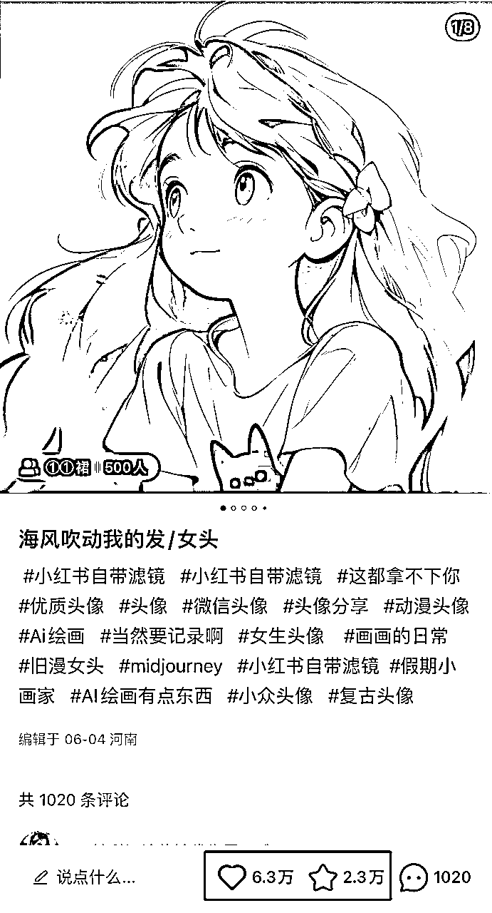
目前有3种变现方式：
1.挂载平台
2.私人定制头像
3.收徒卖课
如果我们发布的头像足够吸引人，观众看到了就会想要下载保存原图
这时候我们就在评论区或者主页引流（注意各平台安全引流法）：
搜索xxx小程序输入xxx口令，就可以保存原图
将观众引流到小程序，他们下载图片需要看一次广告，每看一次广告，我们就会有收益
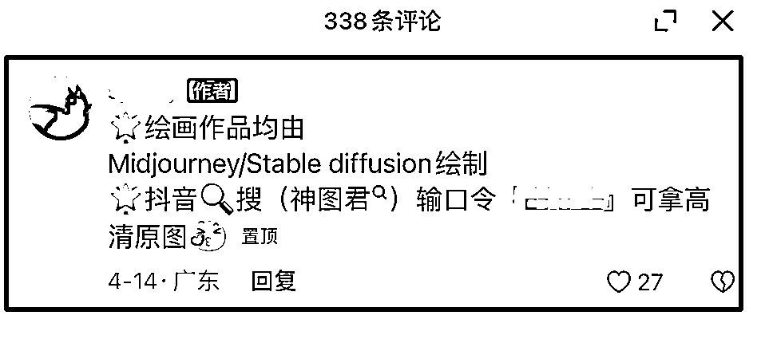
挂载平台的变现方式是最简单的，只要我们做的作品有流量，有人下载，我们就会有收益
但是这种方式一个号的收益是比较低的，如果有能力有时间，可以同时做几个号，来搏一个爆款的几率
如果你的内容足够吸引，观众会有定制个人头像的需求，这时候我们就可以通过接单满足他们的需求
在平台店铺挂上商品，等观众下单（或者引流到微信、咸鱼、淘宝等平台下单）
我们根据客户发的照片和要求做出定制化的头像
这一类单价跨度还比较大
可以做1元钱的引流产品——这里又有引流私域变现的玩法
可以做9.9元的薄利多销
也可以定更高的价格，相应的就要提供更多更好的服务
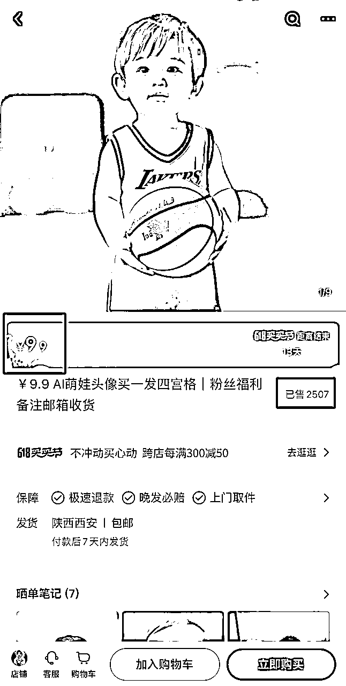

通过作品本身吸引观众，这里面会有一部分人也想学习这是怎么做的，这时就可以进行知识付费
产品可以是最简单的关键词、资料包，进阶一点的视频课，或者更高阶的陪跑训练营
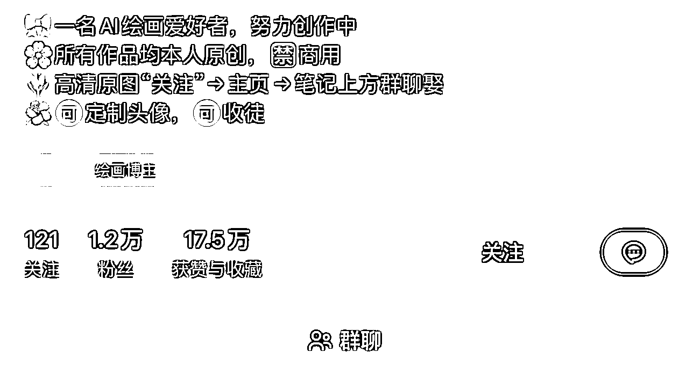
起号的方法就两个字：
1.抄
2.量
1）爆款都是重复的，比起自己琢磨研究，“抄”爆款会更快见效
这里的“抄”不是直接抄袭搬运别人的照片，而是找到别人的爆款笔记
尝试拆解他的关键词，然后复刻出来一样风格的头像
2）异常值是什么？指的是那些普通的数据中不普通的存在

一个笔记平均在20-30赞的博主，突然做出了一个2000赞的内容
博主本人没有在意这个异常值
你就要知道，你发现宝藏了
这个内容能脱颖而出，一定是做对了某些这个博主平时没做对的点
你去挖掘出来，复制，就能大大提升你的成功概率
爆款也是有概率性的，可能同一个东西，别人发就火，你发就凉
这时候利用数量去对冲概率，相当于用数学思想对抗不确定性
试想一下，你的作品都是爆款一样的类型和质量，你发的量又大，长期来看，不可能起不来的
一般这种AI绘画头像壁纸号，我们都是用MJ做的，如果还不会的朋友可以看这篇文章
这里3种小红书热门风格的头像关键词，我都已经帮大家拆解好了
大家可以自行提取，在下面这个文档里
关键词：
A girl, cold expression, white hair, black clothes, earrings, blue background,minimalist art, plat illustration,vector illustration --niji
一个女孩，冷静的表情，白头发，黑衣服，耳环，蓝色背景，极简主义艺术，平面插图，矢量插图—— niji
加粗字体可以自由改主体，服装，背景等

Cartoon Girl, naive and cute, watery big eyes, long black hair, red bow hair accessories, wearing a white shirt, looking at the sky, nostalgic works, retro style, Disney Animation, Shinkai style, top Quality --niji 5
卡通女孩，天真可爱，水汪汪的大眼睛，长长的黑色头发，红色蝴蝶结发饰，穿着白色衬衫，望着天空，怀旧的作品，复古风格，迪士尼动画，新海诚风格，最高品质
加粗字体可以改人物和动作
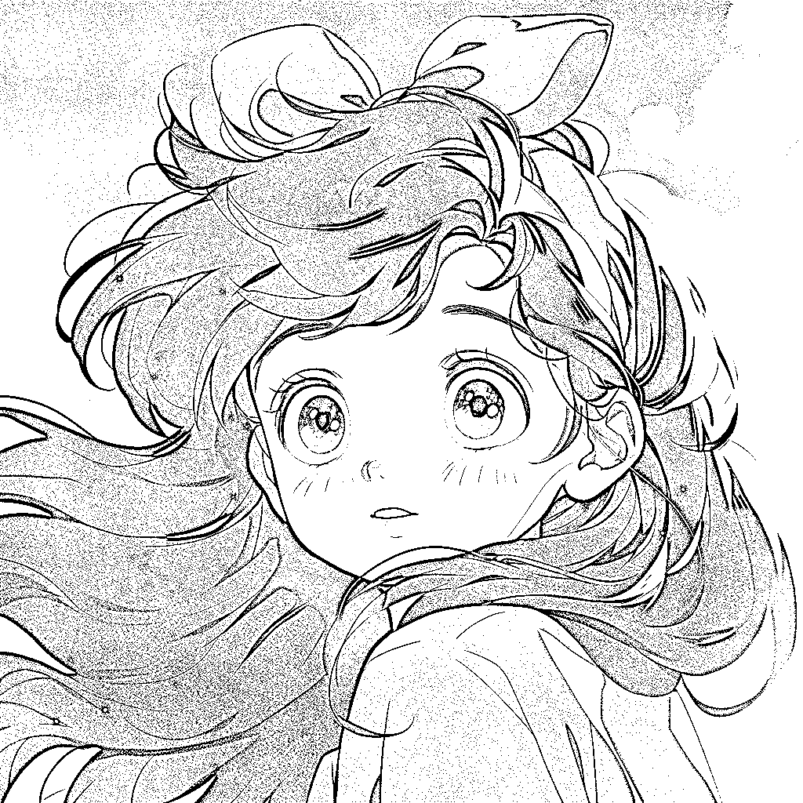

小红书上还有一种叫“流光女孩”的图也非常火
一般这种图是在Stable Diffusion里面生成的，但是微信小程序也可以做出来一样效果的图
这里用的是小程序“MewX AI”（不做背书推荐，其他国内AI绘画小程序也可以）


小程序里面自带了很多种风格的模型，可以选择你喜欢的模型
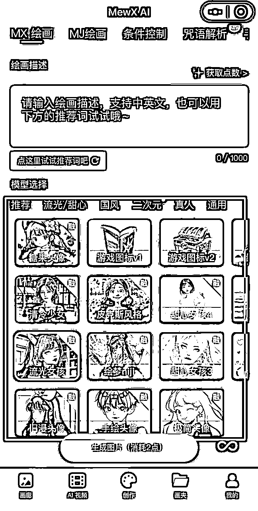
具体的操作是比较简单的，大家可以自己摸索一下，但是非会员每天能生成的张数有限

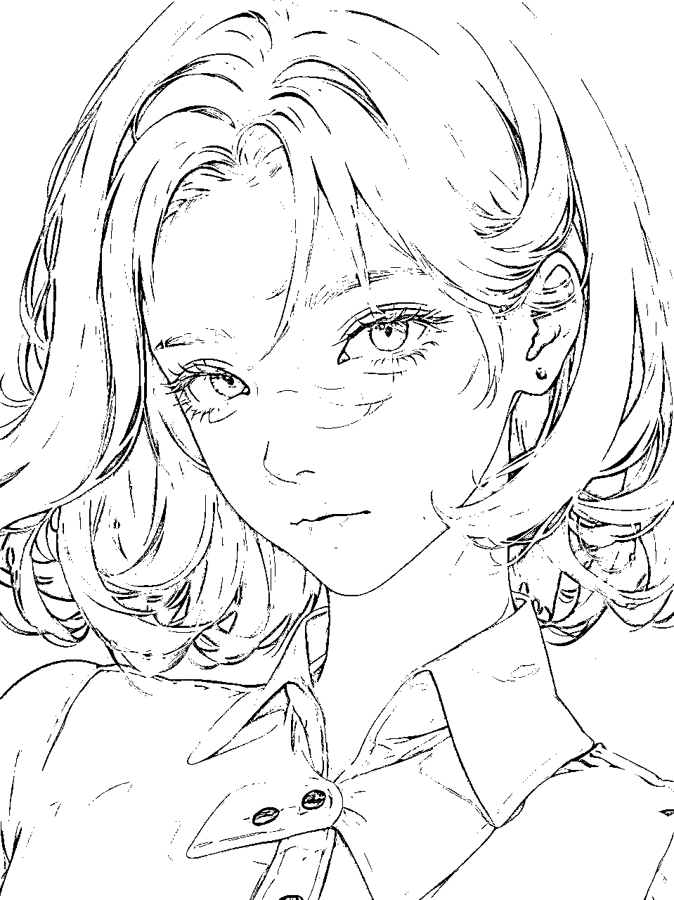
我们发了笔记有流量之后，可能就会有观众找我们定制头像
用的就是“图生图”的功能，给AI一张照片，AI在这张照片的基础上进行创作
为了定制出来的效果更好，我们对照片是有要求的：
1.是正脸的照片
2.图片比较高清
3.背景尽量干净
接下来就给大家分享两种不同风格的定制头像，它们的操作步骤是一样的，只是部分关键词不一样
具体操作流程：
1.把图片发送到midjourney
2.写关键词
3.多刷新图片
这里就以刘亦菲的照片作为例子，通过midjourney的垫图功能生成一张卡通头像


把图片拖动到文本框
按回车发送
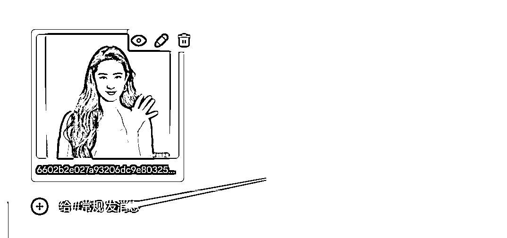
关键词有三个部分构成，分别是：原图链接+原图描述+出图风格

首先先把原图的链接加到prompt里面
直接拖动图片到蓝色的框框里，就会自动生成图片的链接

在链接后面输入一个空格，再往下写关键词
前半部分的关键词就是我们发给midjourney的这张图的描述
比如：一个漂亮的女生，有着黑色的波浪长发，穿着白色的裙子，面对着镜头等等...

输入完描述词之后，就可以输入我们最后想要得到什么风格的图，以及一些照片细节的描写
我们现在是想要生成一张卡通头像
就可以在关键词里面输入“动画风格”之类的词
还可以输入：纯色背景，高清画质、有光泽等等让照片质量更高的词
输入完关键词就可以按回车发送
这个我用到的关键词，加粗字体可以改成自己的照片描述
A beautiful girl with long black wavy hair, wearing a white dress,front view,keeping the same action and posture as the original picture, solid color background, anime style, soft light, super details, Disney characters, art, delicate sheen --iw 2 --s 750 --niji 5
一个美丽的女孩，黑色的长卷发，穿着白色的裙子，面试前方，保持与原图相同的动作和姿势，纯色背景，动画风格，柔和的光线，超级细节，迪斯尼人物，艺术，精致的光泽

一般很难一次性就出来自己满意的照片，这时候就要多刷新，我们俗称“抽卡”就是这个意思，抽10次总有一次是你心仪的
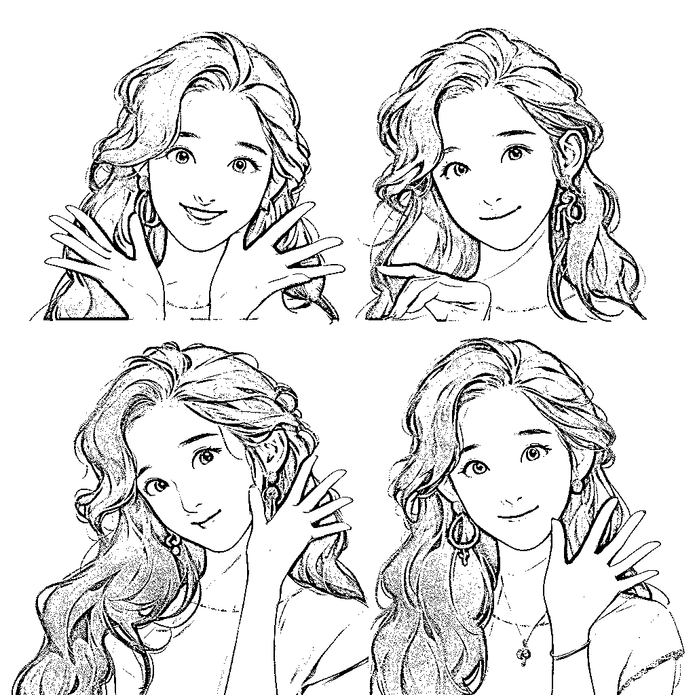
这种风格出来的照片会更偏向于本人
就用“我”的照片给大家看看这种风格的照片该怎么做

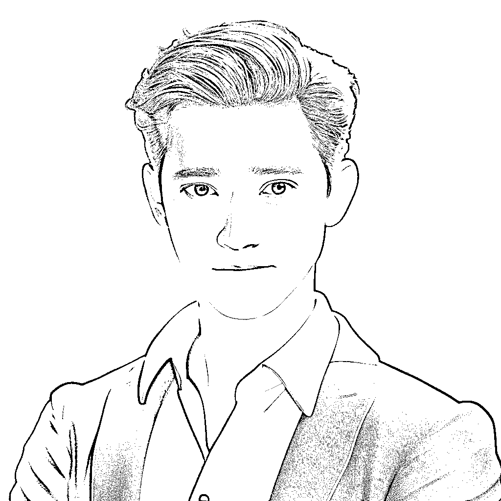
和前面的方法是一样的，只是关键词变成其他风格
比如：皮克斯风格，盲盒，这些词都可以生成出来这种风格的照片
这就是皮克斯风格的关键词，加粗字体可以随意更改
A handsome young man, keeping the consistency of action,expression,clothing, shape and appearance of the photos,3d character from Disney Pixar, super detail,blender, soft lighting, ip, blind box, cinematic edge lighting,romantic scenes --v 5.1 --s 750 --q 2 --style raw
一个帅气的年轻人，和图片保持一致的动作，表情，服装，形状和外观，3D 人物，迪斯尼皮克斯，超级细节，渲染，柔和的灯光，IP，盲盒，电影边缘照明，浪漫的场景
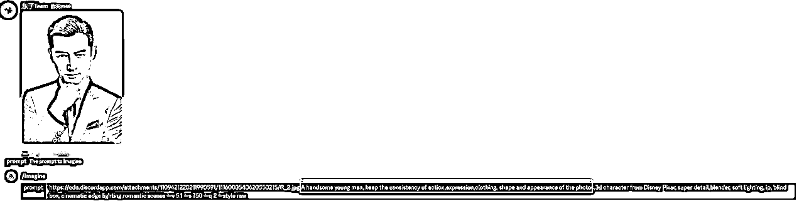
生成出来的照片多刷新几次，总会找到一张比较像本人的照片
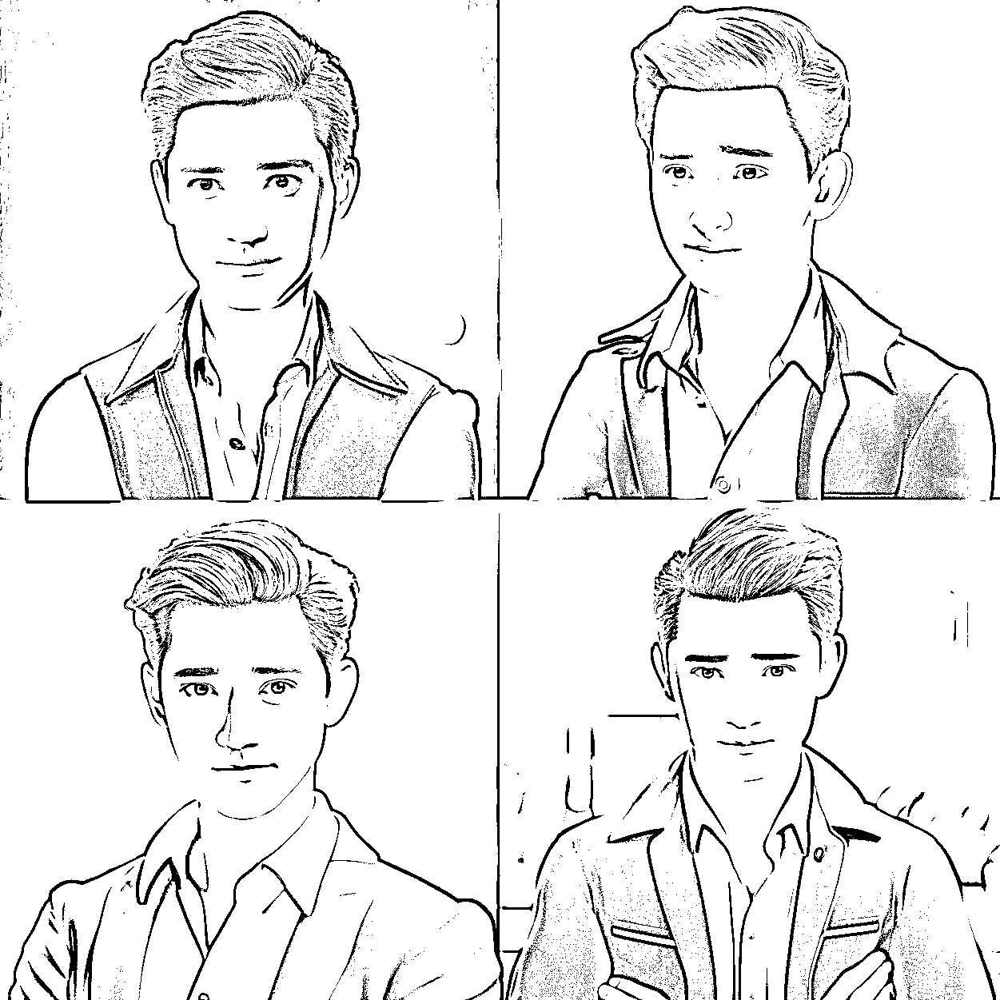
在midjourney里面，哪怕已经给AI喂图了，出来的照片人物还是太过于随机了，而且经常会不像本人
这时候我们就可以用到一个叫InsightFace的换脸插件
换脸后的图片会更倾向于本人的样子

具体操作步骤：
1.用图生图的方法先生成一张照片
2.把换脸机器人邀请到自己的频道
3.上传人脸照片
4.进行人脸的替换
这一步跟文章的第五部分是一样的，这里就不展示具体操作了
目的是先生成出来一张自己想要的风格、跟本人外形比较相似的照片
这个换脸机器人不是midjourney本身的插件，不能直接在MJ里面搜索
点击下面的链接可以把机器人邀请到自己的服务器
https://discord.com/api/oauth2/authorize?client_id=1090660574196674713&permissions=274877945856&scope=bot

邀请完了之后回到midjourney，点击右上角的人形图标，就可以看到换脸机器人已经邀请进来了

接下来就上传我们要替换的人脸照片
最好是正脸没有遮挡的高清照片
在最下面的文本框输入“/”
点击左边换脸机器人的图标
选择 “/saveid” 的命令

把照片拖动进来
然后在下面的“idname”输入这张照片的名字
按回车发送
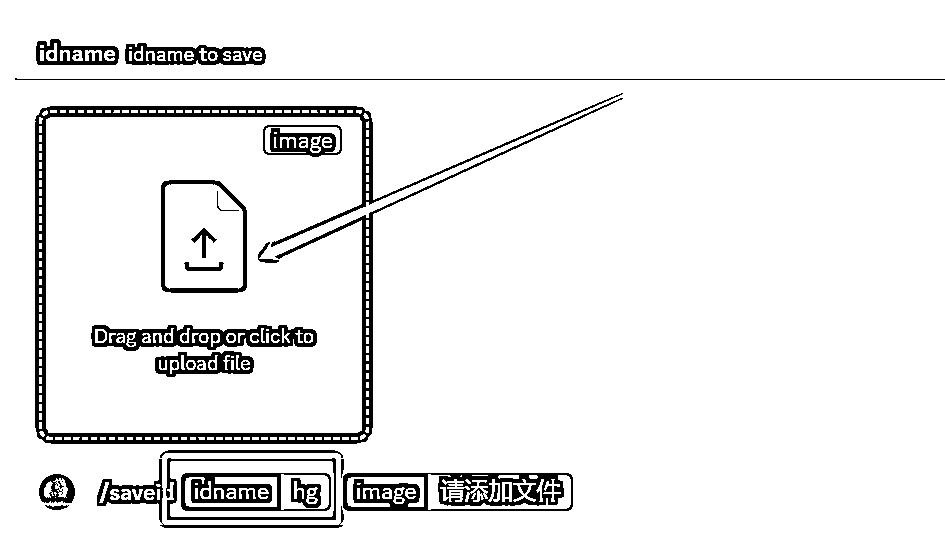
看到这个机器人回复“idname hg created”，就代表人脸上传成功了

接下来我们就可以进行人脸的替换了
输入“/swapid”的指令（和上面上传人脸的指令“/saveid”有点像，别搞乱了噢）

上传一张需要换脸的照片
下面输入刚刚上传的人脸的名字
回车发送

这样就换脸成功啦

好了，以上就是我们这篇文章的全部内容
如果你对AI感兴趣的话，可以关注我的公众号：吴东子AI，也欢迎分享给你身边想学AI技术的朋友
里面有我之前发过的所有文章，之后也会持续给大家更新实用的AI干货教程
我是吴东子，用奶奶都能听懂的方式，分享可以落地实操的干货，我们下篇文章再见！
链接：https://ry5hwpuf7b.feishu.cn/wiki/space/7283841978071072772?ccm_open_type=lark_wiki_spaceLink